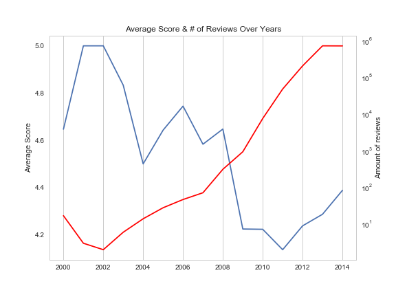

General Analysis about Rating Score and Review
When you get the dataset of Amazon reviews, what’s your most concerning point? In this part, we are going to show you the very basic information of our dataset, which includes the inter-category rating comparison and over-year rating and review changing.
Average rating score for each category
We have 30 different categories here. Average rating is calculated from all of the reviews in the dataset. The average rating is all over score 4 for each category. Recalling our rating behaviours on Amazon, we never become very mean to books we buy, after all we choose to buy and read it, which explains the relatively high average rating.
Rating score breakdown for each category
Rating breakdown gives us more detailed information about each category’s rating information. After sorting the percentage of 5 stars, the results becomes more intuitive. On the left of the diagram where percent of 5 is higher are books related with health and medicine, science and education, which are more scientific and professional topics. On the right of the diagram are books related with more personal or sensitive topics, like gay&lesbian, history, romance and humour and those books, due to individual difference, have less chance getting 5 stars as other kinds of books.
Average rating score and total number of reviews over year

Now, let’s focus on the over-year changing of ratings. Do people rate differently over year? First of all, we have to relook at the distribution of the number of reviews we have for each year. Following shows the average rating of each year and also the number of review we collect in log scale. It’s obvious that we have very small number of reviews before 2010 and we have to remove them from our analysis on over-time change.
Rating score breakdown over year
With reviews from 2010 to 2014, we are able to draw the annual rating breakdown. The interesting part here is reviewers are becoming more and more willing to give 5 stars. In 2014, there are more than 60% out of all reviews giving 5 stars compared to below 1.5% 1-star review. Something is changing but we don’t know yet. What happened actually?
Review's Length Fluctuation Over Year
小海扯淡！！review长度 年度变化 ！！！！
Review Key Words Cloud Over Year
小海扯淡！！review长度 年度变化 ！！！！